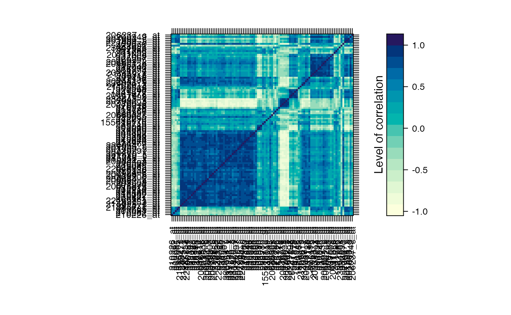

Selection.Rd20 (at most) genes with differential expression at t1, 20 (at most) genes with differential expression at t2, 20 (at most) genes with differential expression at t3, 20 (at most) genes with differential expression at t4 et 20 (at most) genes with global differential expression were selected.
data(Selection)
#> The matrix : #> #> US60 US90 US210 #> 210226_at 0.82417544 0.9166931 0.7310784 #> 233516_s_at -0.27395188 -2.3695246 0.6511830 #> 202081_at 0.60477249 0.6599672 -0.1884742 #> 236719_at -2.07284086 -0.3123747 0.1792494 #> 236019_at -0.08175065 -0.3699708 -0.4315901 #> 1563563_at -1.44513486 1.6869516 -0.4297297 #> ... #> #> Vector of names : #> [1] "210226_at" "233516_s_at" "202081_at" "236719_at" "236019_at" #> [6] "1563563_at" #> ...Vector of geneID : #> [1] "210226_at" "233516_s_at" "202081_at" "236719_at" "236019_at" #> [6] "1563563_at" #> ... #> Vector of group : #> [1] 1 2 1 1 1 1 #> ... #> Vector of starting time : #> [1] 1 2 1 1 1 1 #> ... #> Vector of time : #> [1] 60 90 210 390 #> #> Number of subject : #> [1] 6#>#> US60 US90 US210 US390 #> Min. :-2.76841 Min. :-2.369525 Min. :-1.6147 Min. :-2.60480 #> 1st Qu.:-0.18028 1st Qu.:-0.181425 1st Qu.: 0.1985 1st Qu.:-0.03884 #> Median : 0.05675 Median :-0.001924 Median : 0.9886 Median : 0.31766 #> Mean : 0.05764 Mean : 0.278275 Mean : 0.9611 Mean : 0.26428 #> 3rd Qu.: 0.22438 3rd Qu.: 0.664063 3rd Qu.: 1.6918 3rd Qu.: 0.57117 #> Max. : 2.86440 Max. : 4.284675 Max. : 3.6727 Max. : 2.54704 #> US60 US90 US210 US390 #> Min. :-2.7932 Min. :-2.49245 Min. :-1.21606 Min. :-1.74407 #> 1st Qu.:-0.5547 1st Qu.:-0.01944 1st Qu.: 0.07966 1st Qu.:-0.26548 #> Median :-0.3089 Median : 0.14977 Median : 0.72019 Median : 0.03616 #> Mean :-0.2917 Mean : 0.33720 Mean : 0.73063 Mean : 0.06753 #> 3rd Qu.:-0.1725 3rd Qu.: 0.48744 3rd Qu.: 1.26164 3rd Qu.: 0.32496 #> Max. : 2.0267 Max. : 3.37588 Max. : 3.87950 Max. : 2.83321 #> US60 US90 US210 US390 #> Min. :-2.94444 Min. :-0.9721 Min. :-1.9349 Min. :-3.8418 #> 1st Qu.:-0.23136 1st Qu.:-0.1027 1st Qu.: 0.3254 1st Qu.:-0.1592 #> Median :-0.04761 Median : 0.2548 Median : 1.2512 Median : 0.1538 #> Mean : 0.22115 Mean : 0.6479 Mean : 1.0485 Mean : 0.1219 #> 3rd Qu.: 0.33157 3rd Qu.: 1.0737 3rd Qu.: 1.8513 3rd Qu.: 0.6268 #> Max. : 3.31723 Max. : 4.3604 Max. : 4.4860 Max. : 1.9886 #> US60 US90 US210 US390 #> Min. :-2.85438 Min. :-0.90355 Min. :-0.83324 Min. :-0.96834 #> 1st Qu.:-0.06031 1st Qu.:-0.08464 1st Qu.: 0.07605 1st Qu.: 0.01569 #> Median : 0.03601 Median : 0.17135 Median : 0.52176 Median : 0.17370 #> Mean : 0.14593 Mean : 0.41929 Mean : 0.62446 Mean : 0.23854 #> 3rd Qu.: 0.24568 3rd Qu.: 0.75565 3rd Qu.: 1.07821 3rd Qu.: 0.45189 #> Max. : 1.82903 Max. : 3.60640 Max. : 2.27744 Max. : 1.90880 #> US60 US90 US210 US390 #> Min. :-1.38002 Min. :-2.94444 Min. :-1.0271 Min. :-1.3636 #> 1st Qu.:-0.19910 1st Qu.:-0.01758 1st Qu.: 0.1459 1st Qu.:-0.1386 #> Median :-0.07962 Median : 0.16080 Median : 0.7430 Median : 0.1492 #> Mean : 0.12972 Mean : 0.37123 Mean : 0.7972 Mean : 0.1271 #> 3rd Qu.: 0.26113 3rd Qu.: 0.61933 3rd Qu.: 1.3922 3rd Qu.: 0.4825 #> Max. : 2.31074 Max. : 3.24454 Max. : 3.6213 Max. : 1.5979 #> US60 US90 US210 US390 #> Min. :-1.79176 Min. :-3.20791 Min. :-1.4716 Min. :-1.95883 #> 1st Qu.:-0.09822 1st Qu.:-0.03963 1st Qu.: 0.1292 1st Qu.:-0.04786 #> Median : 0.03378 Median : 0.28261 Median : 0.8392 Median : 0.22472 #> Mean : 0.27978 Mean : 0.52529 Mean : 0.7903 Mean : 0.21171 #> 3rd Qu.: 0.33548 3rd Qu.: 1.03256 3rd Qu.: 1.4416 3rd Qu.: 0.42511 #> Max. : 3.16035 Max. : 3.19975 Max. : 2.8027 Max. : 2.14903#>